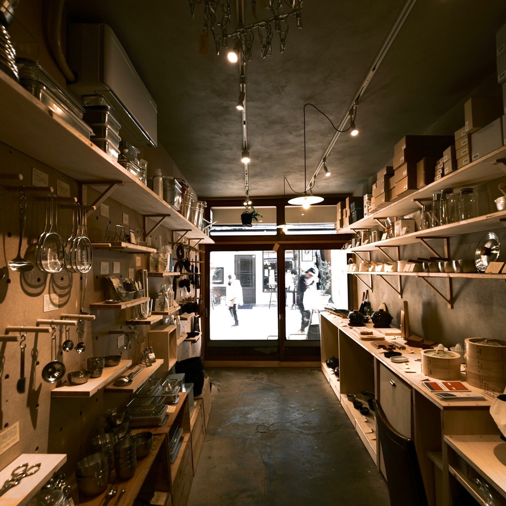
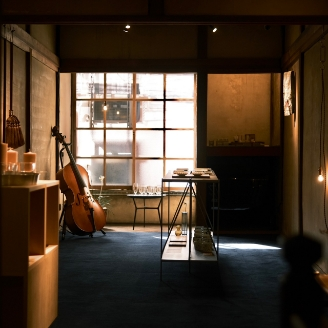

{% extends 'layout' %}

{% block content %}
<section class="legal-section about">
	<div class="about__inner">
		<div class="about__content">
			<div class="box">
				<figure class="pc_2column">
				</figure>
				<article class="box-body fs9">
					<figure class="nondisplay_pc">
						
					</figure>
					<p class="first_txt">選ぶ理由がちゃんとあるモノ、<br>
						長く大事に扱いたいと思えるモノを<br>
						取り扱っています。</p>
					<p>どうしてその道具なのか、<br>
						その理由と価格を理解して、自分で選んだ商品は、きっと使う度に愛着がわき、大事に扱ってもらえると信じています。<br>
					<p>道具を使う度に、選ぶ過程を思い出してもらえる、<br>
						そんなお店でありたいと思っています。</p>
				</article>
				<article class="box-body bo-sepa2 pb2">
					<figure class="nondisplay_pc">
						
					</figure>
					<p>相談しながら選びたい方、<br>
						一人で集中して選びたい方、<br>
						できるだけお客様の思いに寄り添えるように対応したいと思っています。</p>
					<p>道具を使用する度、モノを愛でる度、<br>
						選んだ時間、悩んだ時間を楽しく思い出してもらえると嬉しいです。</p>
				</article>
				<article class="box-body">
					<p>〒759-4103<br>
						山口県長門市深川湯本1260-1<br>
						Tel: 070-2356-5102<br>
						Mail: info@kamada-shouten.jp</p>
						<p>◾️駐車場は付近の有料駐車場をご利用ください。</p>
				</article>
			</div>
			<div class="box map-wrap">
				<iframe src="https://www.google.com/maps/embed?pb=!1m18!1m12!1m3!1d3294.802453537597!2d131.1687953757283!3d34.33004997305358!2m3!1f0!2f0!3f0!3m2!1i1024!2i768!4f13.1!3m3!1m2!1s0x35436712b9015bcb%3A0xdb0d917c99e579dc!2z44CSNzU5LTQxMDMg5bGx5Y-j55yM6ZW36ZaA5biC5rex5bed5rmv5pys77yR77yS77yW77yQ4oiS77yR!5e0!3m2!1sja!2sjp!4v1760615715192!5m2!1sja!2sjp" width="600" height="450" style="border:0;" allowfullscreen="" loading="lazy" referrerpolicy="no-referrer-when-downgrade"></iframe>
			</div>
		</div>
	</div>
</section>
{% endblock %}
